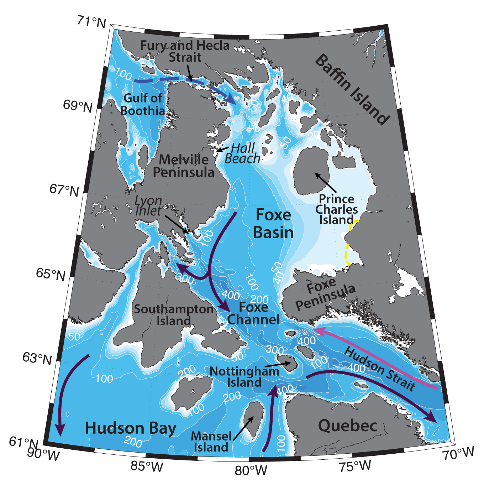

Schematic water circulation patterns and geographical place names in the Foxe Basin region. Adopted from Straneo and Saucier (2008), Defossez et al. (2010), Macdonald and Kuzyk (2011). Dashed yellow line marks the studied region.
Foxe Basin is a rather shallow (mean depth ~ 90 m, maximum depth ~ 450 m) oceanic basin to the north of Hudson Bay, both of which together with Hudson Strait are known as the Hudson Bay system (Macdonald and Kuzyk, 2011). Foxe Basin is connected to the Labrador Sea via Hudson Strait, and to the Gulf of Boothia (and Arctic Ocean) via the narrow Fury and Hecla Strait (e.g. Ferland et al., 2011). Foxe Channel is situated in the southern part of the Foxe Basin along the northern coast of Southampton Island; it is a straight channel approximately 400 km long and 100 km wide, with a maximum depth of 450 m (Defossez et al., 2010). Hydrography of the Foxe Basin is largely determined by the sea-ice, polynyas, inflow of the Arctic waters, atmospheric forcing and tides.
Foxe Basin is ice-covered during most months of the year, with average ice thickness reaching ~2–4 m (Granskog et al., 2011), and is rarely completely ice-free. Open pack ice is common throughout the summer. Strong tides and winds induce ice movements and open numerous polynyas and leads, mostly in the western part of the basin (e.g. Ferland et al., 2011). Eastern Foxe Basin is known as an ice accumulation area, with ice thicknesses frequently greater than 3 m and melting that occurs late in summer (Sibert et al., 2010).
Significant ice movements can be induced by tides, which are strongest in the Hudson Strait and southeastern Foxe Basin (velocities can reach 1 m/s and the M2 tidal range can reach ~4–5 m in these locations), and weakest in the northern part of the Foxe Basin (less than 1 m range), where landfast ice is present (e.g. St-Laurent et al., 2008).
Three polynyas are known to be commonly formed in the Foxe Basin: at Hall Beach, along Melville Peninsula and at Lyon Inlet (e.g. Defossez et al., 2008, 2010). During wintertime cooling, brine rejection and subsequent convective overturning of the water column, dense waters are being formed in these polynyas. This newly formed cold and saline dense deep water of the Foxe Basin further proceeds southwards towards Foxe Channel as a gravity current. Defossez with coauthors (2008) have observed, that this current renews more than 2/3rd of the deep waters of Foxe Channel each year. They note, that these dense waters can probably overflow the sill at 180 m between Southampton Island and Nottingham Island, thus allowing Foxe Basin’s dense waters to enter Hudson Bay. The deep waters of the Foxe Basin are known to be rich in nutrients and provide favorable conditions for marine life. Foxe Basin’s western polynyas also produce large amounts of sea-ice (Defossez et al., 2010).
Defossez with coauthors (2010) suggest, that warming in the atmosphere and changes in winds (especially due to the global climate change) can weaken dense water production in the Foxe Basin, and consequently alter general circulation in the whole Hudson Bay system, which would probably have an impact on the biology at the bottom of Foxe Channel as well, since the ventilation by cold and oxygen rich waters would be lessened.
Foxe Basin transmits fresh water originating in the Arctic Ocean and entering the basin through the Fury and Hecla Strait into Northern Hudson Bay. Mean surface temperatures in the Foxe Basin was reported to be 2.7±0.2 ºC, and surface salinites ~31±0.8 (Ferland et al., 2011). In the Northern Hudson Bay, the freshwater gets entrained into the strong (5 cm/s; Prinsenberg, 1988) cyclonic surface coastal current, carrying river runoff around the Hudson Bay. This boundary current is generally confined to the shore during summertime and ultimately transports riverine water out of the Hudson Bay through the Hudson Strait (a narrow (~100 km) and long (~400 km) channel, with mean depth of ~300 m), along its southern shore (LeBlond et al., 1981; Macdonald and Kuzyk, 2011; Granskog et al., 2011). Eddies, embedded in the mean flow along the southern coast of the Hudson Strait, facilitate the process. In late fall and winter, the strong boundary circulation slows down partly due to a decrease in river water input and partly due to the withdrawal of freshwater by ice formation both of which reduce estuarine forcing (Granskog et al., 2011). The deep waters flow in the same direction but much more slowly (Ferland et al., 2011).
Along the northern coast of Hudson Strait (along Baffin Island) there is an inflow of relatively warm and salty North Atlantic waters (-0.5 ºC<T<1 ºC, S~33) into the Hudson Bay and Foxe Basin (e.g. LeBlond et al., 1981). Strong mixing due to mostly semidiurnal tides (at the mouth of Hudson Strait can reach ~ 8 m and the speeds ~ 3 m/s; e.g. Sutcliffe et al., 1983) affects vertical stratification of the water column, surface nutrient concentrations (supply of nutrients from deep waters), and biological production processes in the area. Ferland with coauthors (2011) demonstrated that the waters of Hudson Strait in summer were much more productive than, e.g., those of northern Hudson Bay and southern Foxe Basin. Ferland with coauthors (2011) suggested that the Hudson Bay system during the summer to late-summer period likely supports a pelagic dominated food web.
Ultimately, the export of freshwater from the Hudson Bay system through Hudson Strait contributes significantly to the freshwater flow to the Labrador Shelf and possibly to the interior of the Labrador Sea, with downstream effects on stratification, water mass properties, variability, and productivity in those regions (Ferland et al., 2011).